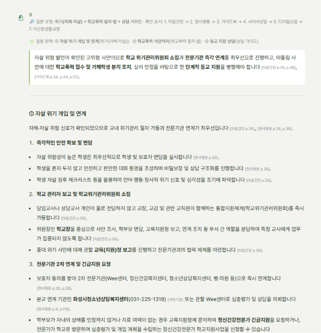
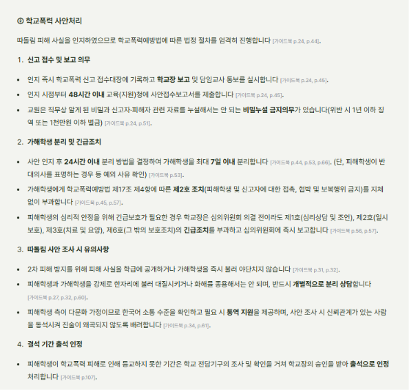
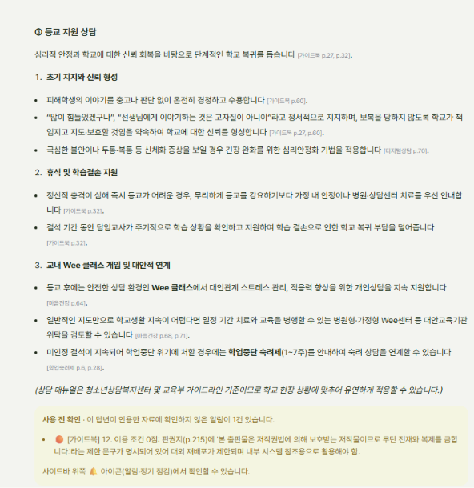
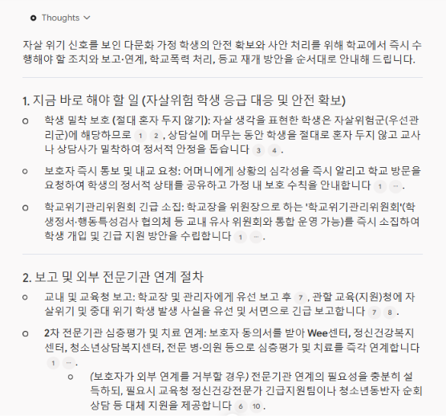
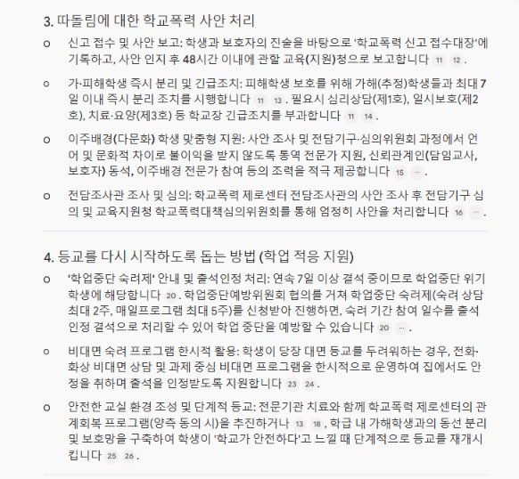

2026-10-19 · 같은 질문, 같은 등록 자료(곁: 이산중 규정·가이드북·상담 매뉴얼 2종·학업숙려제·정서행동·마음건강·아동학대·성사안안내)
사례 1
Wee 희망대상 우수사례집 #11 「통제가 아닌 공감의 상담」 응용 · 스마트폰 과의존 + 온라인 협박 + 결석 + 가정 변화
질문
중학교 1학년 남학생이 최근 2주 동안 지각과 결석이 잦아 담임 의뢰로 상담실에 왔어요. 밤새 스마트폰 게임과 SNS를 하느라 아침에 못 일어나고, 학원도 그만뒀대요. 상담 중에 온라인에서 알게 된 사람에게 사진을 보냈는데 '학교에 퍼뜨리겠다'는 협박 메시지를 받고 있다고 털어놨어요. 부모님은 최근 이혼하셨고요. 학교에서 지금 해야 할 절차와 결석이 계속될 때의 조치, 그리고 상담에서 스마트폰 과의존을 어떻게 다루면 좋을지 알려주세요.
가이드북 p.24·37·148, 성사안안내 p.15·17 일치(1377은 p.15에 있음, 함께 단 가이드북 p.104에는 없음)
정확
②
가해자가 학생이면 분리·제2호 조치·긴급조치, 비밀 유지 + 이산중 제9조 4항
가이드북 p.45·56·57, 성사안안내 p.42, 이산중 p.3 일치
정확
④
피해 결석 → 출석 인정 / 생활 습관 미인정 결석 → 연속 7일·누적 30일 숙려제 안내, 1~7주, 숙려 상담 출석 인정 / 이산중 미인정 결석 6·11·21일 단계 / 법령 우선
가이드북 p.107, 학업숙려제 p.3·10·11, 이산중 p.17 일치
해결
⑤
환경 조성 우선, 중간자극 점진 전환, 문제행동 일지·자기조절 다짐서, 초기 관계형성·구조화·문제 상황 파악
디지털상담 p.61–62, 사이버상담 p.64·74 일치
해결
③
이혼에 따른 정서적 고립이 온라인 과몰입으로 이어졌는지 탐색, 보호자 협력, 화성시 센터 청소년동반자 연계
디지털상담 p.74(가족 문제), 정서행동 p.38(청소년동반자) 일치
정확
표시
근거 약함 2곳: 사이버상담 p.64(29%), 디지털상담 p.61–62(33%)
두 곳 모두 실제로는 맞는 인용. PDF 글자가 띄어쓰기 없이 붙어 있어("문제상황파악") 단어 비교가 놓침
오탐
세 답변 비교
항목
곁 보완 전
곁 보완 후
노트북
② 사진 성격 판단
단정
먼저 확인 + 경우별
몸캠피싱 단정
② 신고·보고·증거·삭제
정확 연락처 없음
정확 연락처 3개·법 조항
정확 연락처 2개, 양식 없음
④ 결석 조치
피해 결석과 섞음
원인별 분리 + 7일·30일 + 이산중 단계
7일·30일 소재 확인 빈도 틀림
⑤ 과의존 상담
근거 불일치
중간자극·환경·회기 활동
중간자극·수면·강박적 확인
③ 가정·연계
화성시 센터
화성시 센터·청소년동반자
지역 기관 없음
근거 확인
쪽 근거, 엉뚱한 인용 섞임
쪽 근거 32쪽, 근거 약함 표시(오탐 2)
번호 각주
답변 시간
약 46초
약 70~75초
-
결론: 보완 후 곁은 정답 기준 5개 항목과 "단정 금지"를 모두 충족해, 같은 질문에서 노트북보다 낫다(판단 조건 처리, 결석 원인 분리, 이산중 규정·지역 연계, 쪽 근거). 노트북에만 있던 "협박 때문에 폰을 계속 확인하는 강박적 행동"이라는 관점은 아직 없다.
남은 과제
근거 약함 오탐 줄이기: 띄어쓰기가 없는 PDF 글자에도 맞도록 단어 대신 글자 묶음(2~3글자)으로 겹침을 잰다.
답변 시간(약 70초): 조각별 검색어 임베딩을 한 번에 묶고, 조각 검색을 동시에 돌린다.
이산중 규정 등록 위치: 지금 추가 자료 [이산중생활규정](연도 2019로 저장)이라 학교 맞춤형 1순위가 아니다 → 기본 자리 [이산중]으로 다시 등록, 연도 2026.
평가 세트 정리: Q11 기대 답("자해·자살 상담 방법은 확인되지 않음")은 마음건강 가이드북 등록으로 낡음 → 새 기대 답으로. Q6·Q14 하락은 한 번 더 돌려 편차인지 확인.
사례 2
Wee 희망대상 우수사례집 #24 「하나, 둘, 셋, 숨 고르기」 응용 · 다문화 가정 + 따돌림 + 자살 사고 + 등교 거부
곁 v12(질문 분해·조각별 검색·근거 약함 검사 보완 적용) · 스트리밍 화면에서 테스트
질문
다문화 가정의 중학교 2학년 여학생이 같은 반 친구들에게 몇 달째 따돌림을 당해 왔다며 일주일째 등교를 하지 않고 있어요. 어머니와 통화하니 아이가 '학교에 가느니 죽는 게 낫겠다'는 말을 했다고 해요. 오늘 상담실에 왔을 때 학생도 비슷한 말을 했어요. 자살 위험이 있는 학생으로 보고 지금 바로 해야 할 일과 보고·연계 절차, 따돌림에 대한 학교폭력 처리, 등교를 다시 시작하도록 돕는 방법을 순서대로 알려주세요.
질문 분해(유형별)
#
질문 속 표현
유형
찾아야 할 근거(지금 등록 자료 기준)
①
'학교에 가느니 죽는 게 낫겠다' · 지금 바로 해야 할 일
위기(자해·자살)
고위험군 즉시 학생·보호자 면담, 동의 후 2차 연계(정서행동 p.26) · 자살 징후 체크리스트(마음건강 p.35)
②
보고·연계 절차
위기 + 절차
학교위기관리위원회 소집·교육(지원)청 보고(마음건강 p.36) · 보호자 거부 시 대체 지원: 긴급지원팀·청소년동반자·Wee 순회상담(정서행동 p.38, 마음건강 p.37) · 자살위험 = 우선관리군, 교내 상담 월 1회(정서행동 p.9, 24) · 화성시청소년상담복지센터
③
몇 달째 따돌림 → 학교폭력 처리
학교폭력 절차·법
접수·48시간 보고(가이드북 p.44) · 24시간 안에 분리 방법 결정, 최대 7일(p.53) · 가해학생 제2호 조치(p.57) · 피해학생 요청 시 긴급보호 1·2·3·6호(p.56) · 전담조사관 조사(p.10, 15) · 2차 피해 방지(p.32)
연계·관리: 보호자가 연계를 거부하면 긴급지원팀·청소년동반자 등 대체 지원 → [정서행동 p.38]. 자살위험은 총점과 관계없이 우선관리군, 교내 상담 월 1회 → [정서행동 p.9, 24]. 지역 기관은 화성시청소년상담복지센터
학교폭력: 48시간 보고, 24시간 안에 분리(최대 7일), 제2호 조치, 피해학생 요청 시 긴급보호, 전담조사관 조사, 학급 공개·대질 금지 → [가이드북 p.10, 32, 44, 53, 56, 57]
다문화: 학생 통역·신뢰관계인 동석, 보호자 통역 → [가이드북 p.34, 45, 61]
등교: 따돌림 때문에 못 나온 결석은 학교장이 인정하면 출석일수에 포함 → [가이드북 p.107]. 휴식·병원·상담 안내, 담임이 학습결손 점검 → [p.32]. 숙려제는 미인정 결석이 이어질 때 → [학업숙려제 p.3]
⚠️ 조심할 점: 일주일 결석을 곧바로 "학업중단 위기 → 숙려제"로 처리하면 안 된다. 원인이 학교폭력 피해이므로 피해학생 보호(출석 인정)가 먼저다.
[곁 답변]
질문 유형: 위기(자해·자살) + 학교폭력 절차·법 + 상담 가이드 · 확인 순서: 마음건강 → 정서행동 → 가이드북 → 사이버상담 → 디지털상담 → 이산중생활규정 · 질문 분해: ① 자살 위기 개입 및 연계 ② 학교폭력 사안처리 ③ 등교 지원 상담 · 인용 30쪽 · 사용 전 알림 1건(가이드북 이용 조건)
분해
답변 내용
근거 대조(원문 확인)
판정
①
자살 위험이 높은 학생은 최우선으로 학생·보호자 면담, 체크리스트로 위기 신호 파악
정서행동 p.26 "고위험군 즉시 조치", 마음건강 p.35와 일치
정확
①
"학생을 혼자 두지 않고 … 비밀보장 및 상담 구조화" [정서행동 p.26]
p.26에 "혼자 두지 않기"는 없음(등록 자료 전체에도 없음). "비밀보장 구조화"는 정서행동검사 일반 면담 1단계 내용인데 자살 위기 상황에 그대로 옮김 → 비밀보장의 한계(보호자 알림)를 함께 써야 맞음
근거 일부
②
학교위기관리위원회 즉시 가동, 학교장 중심 역할 분담, 교육(지원)청 보고
마음건강 p.36과 일치
정확
②
보호자 동의 후 2차 기관 연계, 화성시청소년상담복지센터, 보호자가 인정하지 않으면 정신건강전문가 긴급지원·학교지원사업
월 1회는 정서행동 p.9 일치. "총점과 관계없이" 문장은 p.24에 있는데 p.39·90을 인용
정확 쪽 일부 어긋남
③
접수대장 기록·학교장 보고, 48시간 보고, 비밀누설 금지(1년 이하 징역)
가이드북 p.24, 44, 45, 51 일치
정확
③
24시간 안에 분리 방법 결정·최대 7일, 피해학생 반대 시 예외, 제17조제4항 제2호 조치, 긴급보호 1·2·3·6호 후 심의위원회 즉시 보고
가이드북 p.53, 56, 57 일치. 긴급보호는 원문상 "피해학생이 요청하는 경우"
정확
③
학급에 공개하지 않기, 가해학생 바로 불러 야단치지 않기, 대질·화해 강요 금지
가이드북 p.32, 60 일치
정확
③
사안 조사 주체
전담조사관(교육지원청 학교폭력 제로센터) 조사 또는 전담기구 자체 조사(가이드북 p.10, 15) 언급 없음
누락
④
한국어 소통 수준 확인, 통역, 신뢰관계인 동석
가이드북 p.34, 61 일치. 이주배경 전문가 참여(p.34)는 빠짐
정확
⑤
피해로 못 나온 기간은 학교장이 인정해 출석 처리
가이드북 p.107(법 제16조제4항, 「학교생활기록 작성 및 관리지침」 별표8 "전담기구의 조사 및 확인을 거쳐 학교의 장이 인정") 일치
정확
⑤
무리한 등교 강요 대신 휴식·병원·상담센터 안내, 담임이 학습결손 점검, 신체화 증상엔 심리안정화
가이드북 p.32, 디지털상담 p.70 일치
정확
⑤
등교 뒤 Wee 클래스 상담, 가정형·병원형 Wee센터 위탁 검토, 미인정 결석이 이어질 때 숙려제(1~7주)
마음건강 p.64, 68, 71, 학업숙려제 p.6 일치. 숙려제를 조건부로 둔 것이 정답 기준과 맞음
정확

곁: 질문 분해 · 요약 · ① 자살 위기 개입

곁: ② 학교폭력 사안처리

곁: ③ 등교 지원 · 사용 전 확인
[Gemini 노트북 답변]
질문의 순서(즉시 → 보고·연계 → 학교폭력 → 등교) 그대로 4단락 · 번호 각주 26개
분해
답변 내용
근거 대조(곁 저장소에서 확인)
판정
①
자살위험군(우선관리군), 절대 혼자 두지 않기, 보호자 즉시 통보·내교 요청, 가정 내 보호 수칙
우선관리군은 정서행동 p.24 일치. 혼자 두지 않기·보호자 즉시 통보는 등록 자료에 없는 일반 위기 대응 지식(현장에서는 맞는 조치)
일부 근거 밖
②
학교위기관리위원회 긴급 소집(정서행동검사 협의체와 통합 운영 가능), 교육청 유선·서면 긴급 보고
마음건강 p.35–36 일치
정확
②
보호자 동의 후 2차 기관, 보호자가 거부하면 긴급지원팀·청소년동반자 순회상담 등 대체 지원
정서행동 p.26, 38 일치(곁보다 나음)
정확
②
지역 기관
화성시 센터·Wee 클래스 등 학교·지역 맞춤 연계 없음
부족
③
접수대장, 48시간 보고, 최대 7일 즉시 분리, 학교장 긴급조치 1·2·3호
가이드북 p.44, 53, 56 일치. 24시간 결정 기한, 가해 제2호 조치, 긴급보호가 "피해학생 요청" 조건이라는 점은 빠짐
대체로 정확
③
전담조사관 사안 조사 → 전담기구 → 교육지원청 심의위원회
가이드북 p.10, 15 일치(곁에는 없음)
정확
③
2차 피해 방지(학급 공개·대질 금지)
없음
누락
④
통역 전문가, 신뢰관계인 동석, 이주배경 전문가 참여
가이드북 p.34, 45 일치
정확
⑤
"연속 7일 이상 결석 중이므로 학업중단 위기학생에 해당" → 숙려제(상담 최대 2주·매일프로그램 최대 5주)로 출석 인정
2주·5주는 학업숙려제 p.3, 8 일치. 하지만 결석 원인이 학교폭력 피해인데 피해 결석 출석 인정(가이드북 p.107)을 빼고 숙려제로 단정
원인 혼동
⑤
비대면 숙려 프로그램 한시 운영
2026 학업숙려제 매뉴얼에서 찾을 수 없음
근거 없음
⑤
관계회복 프로그램(양측 동의 시), 동선 분리·보호망, 단계적 등교
관계회복은 가이드북 p.41, 46 일치. 동선 분리는 p.54
정확

노트북: 1. 지금 바로 할 일 · 2. 보고·연계

노트북: 3. 학교폭력 처리 · 4. 등교 재개
최종 비교 분석
항목(분해)
곁
노트북
우세
① 즉시 안전 확보
면담·체크리스트 "혼자 두지 않기" 근거 어긋남, 비밀보장 한계 없음
혼자 두지 않기·보호자 즉시 통보 (근거 밖 일반 지식)
노트북
② 위원회·보고
정확 역할 분담까지
정확 유선·서면 보고
비슷
② 연계·관리
화성시 센터·우선관리군 월 1회
보호자 거부 시 대체 지원 지역 기관 없음
비슷
③ 학교폭력 절차
24시간·7일·제2호·긴급보호·2차 피해 방지 전담조사관 없음
전담조사관 제2호·2차 피해 방지 없음
곁
④ 다문화 배려
통역·신뢰관계인
+ 이주배경 전문가
비슷
⑤ 결석·등교
피해 결석 출석 인정 → 미인정일 때만 숙려제
숙려제로 단정, 비대면 숙려 근거 없음, 관계회복은 좋음
곁
순서·읽기 쉬움
3조각, 30쪽 인용으로 길다
질문 순서 그대로 4단락, 짧다
노트북
근거 확인
문장마다 [자료 p.쪽], 원문 보기, 사용 전 알림
번호 각주
곁
결론: 법정 절차와 결석 처리는 곁이 더 정확하다. 특히 노트북이 놓친 "따돌림 피해 결석은 출석 인정이 먼저"를 정답 기준대로 썼다. 노트북은 위기 대응의 첫 행동(혼자 두지 않기, 보호자 즉시 통보), 보호자 거부 시 대체 지원, 전담조사관을 더 잘 챙겼다. 사례 1보다 두 답변의 차이가 작다. 질문 분해와 조각별 검색 보완이 복합 질문에서 효과를 낸 것으로 보인다.
차이가 난 이유
곁은 근거 쪽에 있는 내용만 쓰도록 되어 있어, 자료에 없는 일반 위기 대응 원칙(혼자 두지 않기, 보호자 즉시 알림)이 약하다. 그런데도 "혼자 두지 않고"를 넣으면서 근거로 p.26을 달았다.
곁은 학교폭력 흐름도(가이드북 p.44)를 인용했지만 조사 주체(전담조사관)를 답변에 옮기지 않았다. 검색 문제가 아니라 답변 구성 문제다.
노트북은 질문의 "일주일째 등교 안 함"을 숙려제 기준(연속 7일)에 바로 맞춰, 결석 원인을 구분하지 않았다. 곁은 사례 1 보완(결석 원인 구분 규칙)이 그대로 작동했다.
곁은 조각마다 근거를 넓게 모아 30쪽을 인용했다. 정확하지만 바쁜 상황에서 읽기에는 길다.
보완할 방향
위기 유형 필수 항목: 질문 유형이 위기(자해·자살)이면 맨 앞에 "지금 바로" 칸을 두고 ① 혼자 두지 않기 ② 보호자 즉시 알림(비밀보장의 한계) ③ 위원회·보고 ④ 동의 후 연계 ⑤ 보호자 거부 시 대체 지원을 빠짐없이 쓴다. 자료에 근거가 없는 일반 원칙은 쪽 번호 없이 "[일반 원칙]"으로 표시해 근거와 섞이지 않게 한다.
학교폭력 절차 필수 항목: 학교폭력 절차 조각에는 접수 → 분리(24시간·7일) → 보고(48시간) → 조사 주체(전담조사관 / 전담기구) → 자체해결 또는 심의위원회 흐름을 빠짐없이 쓴다(가이드북 p.10, 44 흐름도 기준).
쪽 인용 정밀도: 한 문장에 근거 있는 부분과 없는 부분이 섞이면 근거 약함 검사가 놓친다("혼자 두지 않고 + 대화 환경 조성"). 문장을 쉼표 단위로 나눠 검사하거나, 근거 없는 구절은 따로 쓰게 규칙을 단다.
연계 기관 묶음: 연계를 쓸 때 화성시청소년상담복지센터와 함께 1388·청소년동반자·Wee 순회상담을 한 묶음으로 보여 준다(정서행동 p.38, 학업숙려제 p.63).
답변 길이: 조각이 3개 이상이면 맨 위에 "지금 할 일 5줄 요약"을 두고 세부는 아래로 내린다. 인용은 조각마다 핵심 쪽 위주로 줄인다.
함께 고친 것: 답변 아래 "사용 전 확인" 안내 문구가 알림 아이콘을 "사이드바 위쪽"이라고 가리키고 있어, 아이콘을 옮긴 위치에 맞게 "화면 오른쪽 위"로 바꿨다.
보완 후 재시험 (곁 v13)
보완 1~5 적용 후 같은 질문 · 질문 유형: 위기(자해·자살) + 학교폭력 절차·법 + 상담 가이드 · 인용 22쪽(보완 전 30쪽) · 준비 16초 + 생성 33초 = 약 50초 · 근거 약함 표시 1곳
무엇을 바꿨나
#
보완
바꾼 내용(rag.py)
1
위기 필수 항목
규칙 10-1: 자해·자살 신호가 있으면 요약 다음에 ## 지금 바로를 두고 ① 혼자 두지 않기 ② 보호자 즉시 알림(비밀보장의 예외) ③ 위원회·교육청 보고 ④ 동의 후 연계 ⑤ 보호자 거부 시 대체 지원을 이 순서로 쓴다. 자료에 근거가 없는 항목은 쪽 번호를 빌리지 말고 [일반 원칙]으로 표시한다(화면에서도 근거처럼 회색). 일반 면담의 "비밀보장 구조화"를 위기에 옮겨 쓰지 않는다.
2
학교폭력 절차 필수 흐름
규칙 5-1: 접수·보고 → 분리(24시간·7일)·제2호 → 48시간 보고 → 조사 주체(전담조사관 배정 요청 / 전담기구 자체 조사) → 자체해결 또는 심의위원회. 필수 항목 근거를 찾는 고정 검색어(MUST_QUERIES)를 유형별로 한 묶음 더 검색한다. 그 유형의 1·2순위 자료에서만, 자료당 최대 3청크.
3
구절 단위 근거 검사
줄 전체가 인용 쪽과 맞아도, 쉼표·연결 어미(-고, -며, -거나)로 나눈 구절 중 핵심어가 인용 쪽에 하나도 없고 뜻 유사도도 0.66 미만이면 "근거 약함"으로 표시한다. 보완 전 답변에 돌리면 30쪽, 27줄 중 "학생을 혼자 두지 않고"(뜻 0.63) 한 곳만 잡힌다(오탐 0).
4
연계 기관 묶음
규칙 8-2: 연계는 ### 연계 기관 하나로 모은다. [지역기관] 목록에 등록 자료에 적힌 전국 창구 2개(청소년전화 1388: 학업숙려제 p.63, 청소년동반자: 정서행동 p.38)를 더했다.
5
답변 길이
조각 3개 이상이면 ## 한눈에 보기(근거 없이 5줄 이내)를 위에 둔다. 규칙 15: 문장에는 그 내용이 실제로 나오는 쪽만, 핵심 3개 이하로 단다.
정답 기준 대조(원문 확인)
분해
보완 후 답변
근거 대조
판정
①
지금 바로 1. 혼자 두지 않기 [일반 원칙]
근거 없는 일반 원칙을 쪽 번호 없이 따로 표시함. 보완 전에는 정서행동 p.26을 빌려 달았음
해결
①
2. 보호자 즉시 알리기, 비밀보장의 예외 설명 [일반 원칙], [정서행동 p.8]
[일반 원칙] 표시는 맞음. 함께 단 p.8은 검사 관리 흐름도라 무관함 → 근거 약함으로 자동 표시됨(단어 0.33·뜻 0.65). 맞는 쪽은 정서행동 p.90("우선관리군: 즉각적 면담, 보호자 연락")
자살 위험 신호가 확인되었으므로 **학생의 생명과 안전 확보**를 최우선으로 즉시 조치하고, 학교폭력 법정 절차 진행과 출석 인정 기반의 등교 지원을 병행해야 합니다.
## 지금 바로
1. **학생을 혼자 두지 않기**: 안전이 확보될 때까지 교실이나 상담실에서 학생을 절대 혼자 두지 않고 보호합니다 [일반 원칙].
2. **보호자에게 즉시 알리기**: 생명이 위험한 상황에서는 비밀보장의 예외임을 학생에게 차분히 설명하고, 보호자에게 즉시 연락하여 내교하도록 요청합니다 [일반 원칙], [정서행동 p.8].
3. **학교위기관리위원회 소집·교육(지원)청 보고**: 학교장에게 즉시 사안을 보고하고 학교위기관리위원회를 긴급 소집하며, 교육(지원)청에 유선 보고를 진행합니다 [마음건강 p.36, p.45].
4. **보호자 동의 후 전문기관 연계**: 학생 및 보호자 면담을 실시한 후 보호자의 동의를 받아 병·의원, Wee센터, 청소년상담복지센터 등 2차 전문기관으로 즉시 연계합니다 [정서행동 p.26].
5. **보호자가 연계를 거부할 때의 대체 지원**: 보호자가 외부 기관 방문을 거부하는 경우, 정신건강전문가 긴급지원팀이나 찾아가는 청소년동반자 등 방문 지원 사업을 제안하고 학교 내에서 지속 관리를 유지합니다 [정서행동 p.38].
## 한눈에 보기
- 학생을 전담 보호하며 보호자 즉각 통보 및 학교위기관리위원회를 소집합니다.
- 위기 평가 후 전문기관 연계 및 정신건강 치료비 지원 사업을 신청합니다.
- 따돌림 사안에 대해 학교장 보고, 긴급 분리, 가해학생 제2호 조치 등 학교폭력 절차를 밟습니다.
- 학교폭력 피해로 인한 결석을 출석 인정으로 처리하고 점진적 심리 안정 개입을 지원합니다.
---
### ① 자살 위기 개입 및 보고·연계 절차
- **학교위기관리위원회 소집**: 학교장을 위원장으로 하여 관련 교직원들이 참석하는 회의를 소집하고, 사안 조사, 보호자 면담, 대외 협력 등의 역할을 분담합니다 [마음건강 p.36].
- **위기학생 치료 및 전문 지원 연계**: 자살위험군은 총점과 상관없이 무조건 **우선관리군**으로 분류되어 즉각적인 연계가 필요합니다 [정서행동 p.90]. 학생·보호자가 동의하면 외부 전문의가 학교로 직접 방문하는 **정신건강전문가 학교지원사업**을 교육지원청이나 거점센터로 신청할 수 있습니다 [마음건강 p.35, p.73].
- **치료비 지원 안내**: 경제적 부담으로 치료 적기를 놓치지 않도록 정신과 진료·치료비 및 신체 상해 치료비 등을 지원하는 **학생 마음바우처 지원 사업**을 안내합니다 [마음건강 p.43].
- **다문화 가정 소통 배려**: 학생의 어머니와 상담 및 정보 제공 시 언어적 장벽이 있다면 통역 지원 등을 활용하여 충분한 안내가 이루어지도록 돕습니다 [가이드북 p.49, p.61].
### ② 따돌림 학교폭력 사안처리 절차
- **접수 및 학교장 보고**: 상담 중 인지된 집단 따돌림 사안을 학교폭력 신고 접수 대장에 기록하고 학교장에게 즉시 보고합니다 [가이드북 p.24].
- **피·가해학생 분리**: 피해학생이 반대 의사를 표명하지 않는 한, 인지 후 **24시간 이내**에 분리 방법을 결정하여 가해학생을 최대 **7일 이내** 분리합니다 [가이드북 p.44, p.66].
- **가해학생 긴급조치**: 학교장은 학교폭력을 인지한 경우 지체 없이 학교폭력예방법 제17조 제4항에 따른 **가해학생 제2호 조치**(피해학생 및 신고자에 대한 접촉, 협박 및 보복행위 금지)를 부과합니다 [가이드북 p.44, p.57].
- **피해학생 긴급조치 지원**: 심리적 충격 완화를 위해 학교장 권한으로 제1호(심리상담 및 조언), 제2호(일시보호), 제3호(치료를 위한 요양), 제6호(그 밖의 보호조치)를 우선 부과할 수 있습니다 [가이드북 p.57].
- **교육(지원)청 보고**: 사안 접수 후 **48시간 이내**에 교육지원청으로 사안접수보고서를 보고합니다 [가이드북 p.24, p.37].
- **사안조사 주체 결정**: 학교장은 교육지원청 학교폭력제로센터에 **학교폭력 전담조사관 배정 요청**을 하거나, 학교 자체 조사가 적합하다고 판단되는 경우 전담기구 자체 조사를 진행하도록 결정합니다 [가이드북 p.37, p.44].
- **대질 금지 및 2차 피해 방지**: 따돌림 피해학생과 가해학생을 강제로 한자리에 불러 대질하거나 화해를 종용해서는 안 되며, 반 전체 앞에서 사안을 공개하여 낙인을 찍지 않도록 주의합니다 [가이드북 p.27, p.32].
### ③ 등교 지원 및 상담 개입 방법
- **피해 결석의 출석 인정 처리**: 심의위원회의 보호조치 결정 이전이라도, 학교폭력으로 인한 피해로 출석하지 못했음을 학교 전담기구의 조사·확인을 거쳐 학교장이 인정한 경우 해당 결석을 **출석으로 인정**하여 성적 및 출결에 불익이 없도록 조치합니다 [가이드북 p.107].
- **심리적 안정 및 지지**: 학생이 극심한 정서적 고통을 호소할 때 고자질이 아님을 확인해 주고 전폭적으로 돕겠다는 신뢰를 심어줍니다 [가이드북 p.27]. 일상생활 복귀 전까지 무리한 등교를 강요하기보다 가정 내 안정과 심리상담을 우선 안내합니다 [가이드북 p.32].
- **대처 자원 탐색 대화**: 학생과 상담 시 힘든 상황 속에서도 학교에 오거나 버텨낸 강점을 인정해 주는 대화법(예: “쉽지 않았을 텐데 어떻게 오늘 학교에 올 수 있었나요?”, “어떤 점이 조금 나아지면 학교생활이 달라질 수 있을까요?”)을 활용하여 내적 힘을 북돋웁니다 [아동학대 p.94].
- **교내 지속 관리**: 전문기관 연계 후에도 학교 내 Wee 클래스 상담을 정기적으로(우선관리군 기준 월 1회 이상) 병행하며 학생의 적응과 정서 변화를 지속적으로 모니터링합니다 [정서행동 p.39].
### 연계 기관
- **화성시청소년상담복지센터**: 전화 031-225-1318 (위기청소년 전문상담, 1:1 대면상담 및 통합사례관리) [지역기관]
- **청소년전화 1388**: 유선 1388, 휴대전화 031-1388 (365일 24시간 위기 전화상담) [지역기관]
- **청소년동반자**: 전문상담사가 직접 찾아가는 맞춤형 상담 서비스(화성시청소년상담복지센터 연계) [지역기관]
- **화성오산교육지원청 Wee센터**: 심화 심리평가, 병원 치료 연계, 위기상담 지원 [마음건강 p.65]
세 답변 비교
항목
곁 보완 전
곁 보완 후
노트북
① 즉시 안전(혼자 두지 않기·보호자 알림)
근거 빌림, 비밀보장 오적용
5가지 모두 + [일반 원칙] 구분
있음(근거 밖)
② 위원회·보고·연계
정확 대체 지원 없음
+ 대체 지원·유선 보고·마음바우처
정확 지역 기관 없음
③ 학교폭력 절차
전담조사관 없음
흐름 전체 + 전담조사관
제2호·2차 피해 방지 없음
④ 다문화 배려
학생 통역·신뢰관계인
보호자 통역만
+ 이주배경 전문가
⑤ 결석·등교
피해 결석 출석 인정
출석 인정 + 성적 불이익 금지
숙려제로 단정
연계 기관
화성시센터
화성시센터·1388·청소년동반자·Wee센터 묶음
대체 지원은 있음, 지역 기관 없음
읽기
요약 1줄, 30쪽
지금 바로 + 한눈에 보기, 22쪽
4단락, 짧음
근거 확인
근거 약함 0곳(놓침)
빌린 쪽 1곳 자동 표시
번호 각주
결론: 보완 후 곁은 노트북이 앞섰던 세 가지(즉시 안전 행동, 보호자 거부 시 대체 지원, 전담조사관)를 모두 채웠다. 노트북보다 나았던 결석 처리·학교폭력 절차·지역 연계는 그대로다. 노트북에만 남은 것은 다문화 학생 사안조사 때 이주배경 전문가·통역 조력 정도다.
평가 세트 회귀 확인(v12 → v13, 이전과 같은 13문항 기준): 검색 재현율 90.3% → 95.4%(Q14 0.33→1.0), 핵심 포함률 92.5% → 91.2%(Q14 0.83→1.0 상승, Q1 '근거자료'·Q6 '삭제' 한 항목씩 빠짐 — Q6은 이전에도 실행마다 흔들리던 문항), 평균 27.4초 → 27.5초. Q8~Q10은 이산중이 추가 자료로 등록돼 있어 이산중 쪽 채점이 안 됨(별도 과제).
남은 과제
쪽 빌림: [일반 원칙] 옆에 무관한 쪽을 또 다는 경우가 있다(정서행동 p.8). 근거 약함으로 표시는 되지만, 맞는 쪽(p.90 "보호자 연락")을 찾아 주지는 못한다.
다른 사안 자료 빌려 쓰기: 아동학대 매뉴얼의 대화법을 따돌림 상담에 그대로 씀. 다른 사안 자료를 쓸 때는 "(아동학대 사안 대화법 참고)"처럼 출처 맥락을 밝히게 한다.
조각 수: 이번엔 질문이 3조각으로 나뉘어 다문화(④)가 독립 조각이 아니었고, 학생 사안조사 통역이 빠졌다. 대상 학생 특성(다문화·장애 등)이 질문에 있으면 절차 조각 안에 해당 지원을 꼭 쓰게 한다.